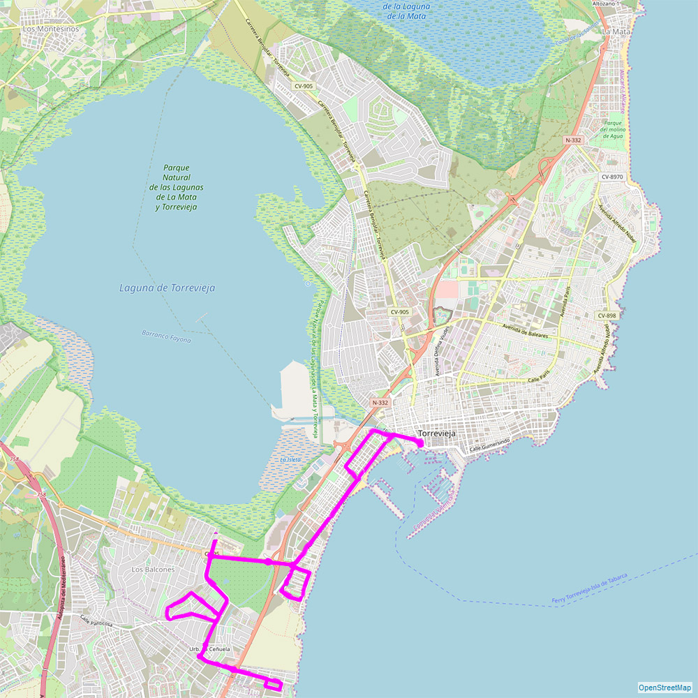

Z tych m.in. miast można dolecieć do Alicante:
Z lotniska w Alicante można dojechać taksówką (koszt ok. 50 €)
Po Torrevieja i okolicy można poruszać się też wypożyczonym rowerem (również elektrycznym). Wypożyczalnie np:
Calle los Portalicos, 7, , Av. Dr. Gregorio Marañón, 43, Real Club Nautico, Paseo Vistalegre, 2A
Amsterdam, Antwerpia, Asturias, Barcelona, Bergen, Bazylea(Szwajcaria)/Miluza, Belfast, Berlin, Bilbao, Billund, Bournemouth, Bimingham, Brema, Bristol, Brksela, Bukareszt, Cardiff, Cluj-Napoca, Kolonia, Kopenhaga, Cork, Doncaster, Dublin, Dusseldorf, Edynburg, Eindhoven, Exeter, Frankfurt, Gdańsk, Genewa, Glasgow, Gothenburg, Hamburg, Helsinki, Haugesund, Ibiza, Karlsruhe/Baden Baden, Kowno, Kijów, Kraków, Leeds, Leicestershire, Liege, Lizbona, Liverpool, London, Maastricht, Madryt, Manchester, Marsylia, Mediolann, Modlin, Moskwa, Monachium, Newcastle, Oslo, Ostenda, Palma de Mallorca, Paryż, Porto, Poznań, Reykjavik, Rzym, Rotterdam, Sandefjord, Santiago De Compostela, Sevilla, Shannon, Southend, Stavanger, Sztokholm, Stuttgart, Trondheim, Wiedeń, Warszawa, Wrocław.
Z lotniska w Alicante co 2 godziny odjeżdża autobus do centrum Torrevieja. Następnie autobus miejski dowozi tuż do mieszkania.Z lotniska w Alicante można dojechać taksówką (koszt ok. 50 €)
Po Torrevieja i okolicy można poruszać się też wypożyczonym rowerem (również elektrycznym). Wypożyczalnie np:
Calle los Portalicos, 7, , Av. Dr. Gregorio Marañón, 43, Real Club Nautico, Paseo Vistalegre, 2A

Trasa B Torrevieja – Torretas
Październik do maja: od poniedziałku do piątku co 35 min. (07:30 do 22:00)
Październik do maja: od poniedziałku do piątku co 35 min. (07:30 do 22:00)
weekendy i święta co 65 min. (07:30 do 22:00)
Czerwiec do września: codziennie co 40 min. (07:30 do 23:00)

Trasa A Torrevieja – La Mata (Avda. París)
Październik do maja: od poniedziałku do piątku co 30 min. (07:30 do 22:00)
Październik do maja: od poniedziałku do piątku co 30 min. (07:30 do 22:00)
weekendy i święta co 40 min. (07:30 do 22:00)
Lipiec i sierpień: codziennie co 15 min. (07:30 do 23:00)
Czerwiec do września: codziennie co 30 min. (07:30 do 23:00)

Trasa C Torrevieja – Lomas
Październik do maja: od poniedziałku do piątku co 35 min. (07:30 do 22:00)
Październik do maja: od poniedziałku do piątku co 35 min. (07:30 do 22:00)
weekendy i święta co 65 min. (07:30 do 22:00)
Czerwiec do września: codziennie co 40 min. (07:30 do 23:00)

Trasa D-F Torrevieja – Los Altos – Rocio del Mar
Październik do maja: od poniedziałku do piątku co 35 min. (07:30 do 22:00)
Październik do maja: od poniedziałku do piątku co 35 min. (07:30 do 22:00)
weekendy i święta co 65 min. (07:30 do 22:00)
Czerwiec do września: codziennie co 40 min. (07:30 do 23:00)

Trasa E Torrevieja – Los Balcones – Lago Jardín
Październik do maja: od poniedziałku do piątku co 35 min. (07:30 do 22:00)
Październik do maja: od poniedziałku do piątku co 35 min. (07:30 do 22:00)
weekendy i święta co 75 min. (07:30 do 22:00)
Czerwiec do września: codziennie co 35 min. (07:30 do 23:00)

Trasa G Torrevieja – San Luís
Październik do maja: od poniedziałku do piątku co 35 min. (07:30 do 22:00)